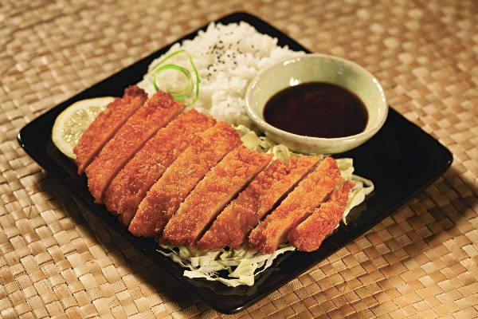

Chicken Katsu

Description
What is Chicken Katsu? Katsu is a very popular Japanese comfort food made up of breaded cutlets of
chicken or pork mostly. The secret is having a crispy golden brown outside while still having a juicy
tender inside. Katsu dishes are traditionally served with katsu sauce drizzled on top of the meat with a side of
crunchy shredded cabbage and steamed rice.
Ingredients
- 4 skinless, boneless chicken breast halves - pounded to 1/2 inch thickness
- salt and pepper to taste
- 2 tablespoons all-purpose flour
- 1 egg, beaten
- 1 cup panko bread crumbs
- 1 cup oil for frying
Steps
- Season chicken breasts on both sides with salt and pepper.
- Place the flour, egg, and panko crumbs into individual small dishes.
- Coat the chicken breasts in flour, shaking off the excess.
- Dip the coated chicken into the panko crumbs until fully coated on both sides.
- Heat 1/4 inch of oil into a large skillet over medium-high heat.
- Place chicken into the hot oil, and cook 3-4 minutes per side, or until golden brown.
- Let chicken cool for a bit and serve with katsu sauce, side of shredded cabbage, and rice.
- Enjoy!